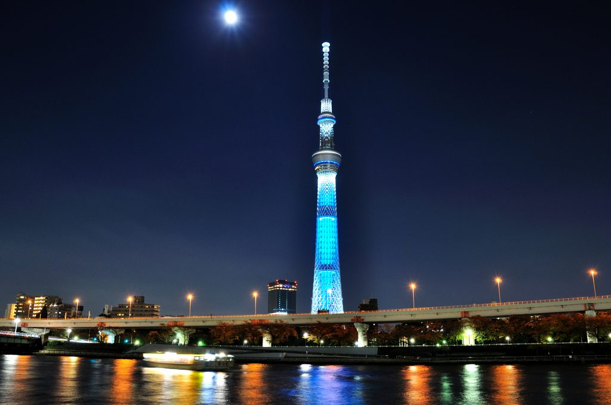
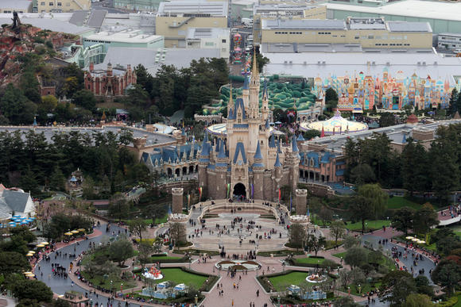
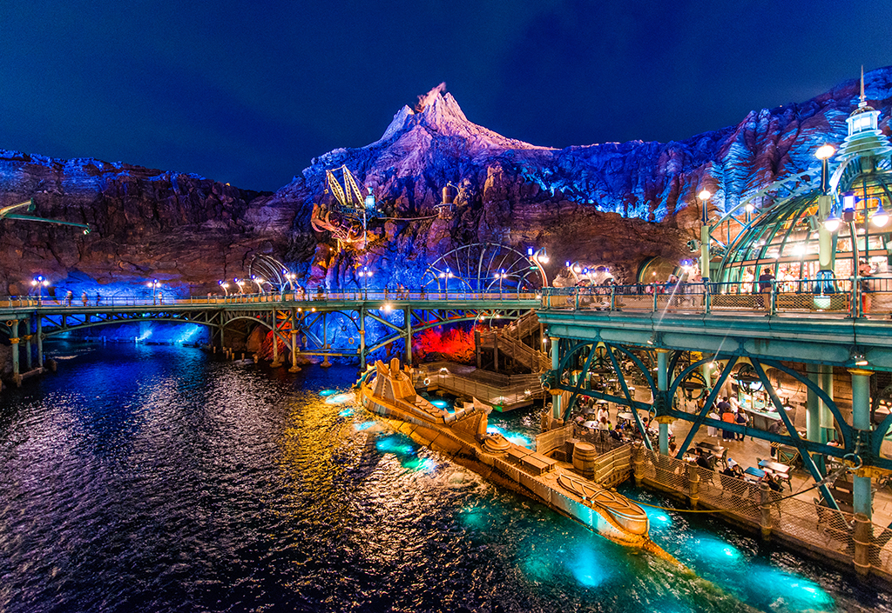

Tokyo

Finally, at my fifth and last destination: Tokyo, there are three specific places that I want to make sure to visit.
1. Tokyo Skytree- This tower is 634 meters high in the air and is the tallest tower in the world! It is used for TV and radio broadcasting and communications and also has a popular observation deck that visitors like me are excited to visit!

2. Tokyo Disneyland- The Disneyland in Tokyo has different attractions from the ones in California. There is Pirates of the Caribbean ride, a Jungle Cruise ride, an Enchanted Tiki Room, the Big Thunder Mountain, and more! I think I'd have lots of fun here!

3. Tokyo Disneysea- Guess what! After visiting Disneyland, I'm coming to the Disneysea too! I don't need to explain why, its obviously because I expect any Disney park to be fascinating to visit! The park's centerpiece and most prominent feature is the giant volcano, Mount Prometheus, wherein the "Mysterious Island" is located. Below is a cool picture! I want to visit this place so bad...

Well, this concludes my dream vacation! Thanks for following through the entire website and I hope you had fun learning about these destinations I wish to visit.